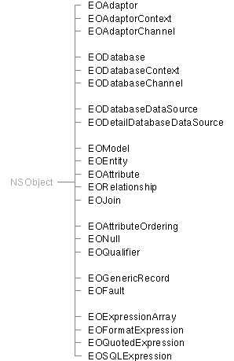

Enterprise Objects Framework Release 1.1 Copyright ©1995 by NeXT Computer, Inc. All Rights Reserved.
| 1 |
The Access Layer
| Library: | libEOAccess_s.a | |
| Header File Directory: | /NextDeveloper/Headers/eoaccess |
| Introduction |
| The access layer of the Enterprise Objects Framework defines classes and protocols that allow your application to interact with database servers at a high level of abstraction. Its major components are: |
| The adaptor level, for server-independent access to records | ||
| The database level, which allows applications to treat records as full-fledged enterprise objects | ||
| A set of modeling classes for describing the schema of a database | ||
| A set of data source protocols and classes that generalizes the behavior of the database level to any source of data-bearing objects | ||
| A set of protocols and categories defining enterprise objects--objects that couple business processes with information in a database |
| This introduction lists the individual classes and protocols of the access layer, suggesting entry points into the reference material. All of the reference material for the Enterprise Objects Framework assumes that you're familiar with the Foundation Kit and with the concepts described in the Enterprise Objects Framework Developer's Guide.
Classes and Protocols Figure 1 illustrates the major and minor groupings of classes in the access layer. At the top are the adaptor-level classes: EOAdaptor, EOAdaptorContext, and EOAdaptorChannel. The adaptor-level classes define a server-independent interface for working with relational database systems. The adaptor level retrieves all data in the form of NSDictionary objects whose keys represent column names and whose values are the values for those columns. Server-specific subclasses encapsulate the behavior of database servers, offering a uniform way of interacting with servers while still allowing applications to exploit their unique features. You can implement your own set of adaptor objects to communicate with nearly any relational database system. |
|  |
| Figure 1. The Access Layer Inheritance Hierarchy
The second group contains the classes that form the database level: EODatabase, EODatabaseContext, and EODatabaseChannel. As you can see by their names, these classes closely parallel those of the adaptor level, and in fact make direct use of the adaptor classes. The database level, however, adds a number of powerful features centered around enterprise objects. An enterprise object represents a component of your business both within your application and in your database. Where the data accessed in the adaptor level takes the form of simple dictionary objects, the data in the database level exists as enterprise objects that you define, that have their own behavior, and that can perform many operations independent of the fact that their data is stored in a database. The third group of classes are the bridge between the access layer and the user interface layer. The EODatabaseDataSource and EODetailDatabaseDataSource classes offer the interface layer (documented in Chapter 2) an access model even simpler than that provided by the entity-relationship model, allowing an interface controller to access relational data simply as a set of objects. The classes of this layer use the EODataSources, EOMasterDataSources, EOQualifiableDataSources, and EORollbackDataSources protocols to present this simple model. The core modeling classes form the fourth group. An EOModel contains the information about what a database contains: the entities, represented by EOEntity objects; the attributes of those entities, represented by EOAttributes; and the relationships among the entities, represented by EORelationship objects. EOJoins specify the pairs of EOAttributes that define a relationship. The next three modeling classes are used not to define a model, but to access a database described by objects of the core modeling classes. EOAttributeOrdering specifies the order in which objects are fetched from a database. EONull represents NULL values fetched from the server. EOQualifier specifies which records or objects in the database should be affected by certain operations. The pair of classes below the modeling classes represent Framework-defined enterprise objects. EOGenericRecord is the default enterprise object class. It provides the minimum behavior needed of an enterprise object: the storage and retrieval of properties by name. When creating your own enterprise object classes, you can start from scratch by creating a subclass of NSObject or Object, or you can take advantage of the existing functionality of the EOGenericRecord class. An EOFault object is used for an enterprise object that needs to exist in the application, but whose data hasn't yet been fetched. When accessed, a fault object fetches its data and transforms itself into a real enterprise object. The group of classes at the bottom of the figure (the "expression" classes) are related to the adaptor classes. These classes are used internally by the Framework; you don't work directly with them, but you have to subclass EOSQLExpression when creating your own database adaptor. Two protocols, EOExpression (actually an informal protocol, or category) and EOExpressionContext, are also related to these classes. There are a few protocols not directly related to any of the classes. The EOKeyValueCoding informal protocol is the signature of an enterprise object class. It defines methods for storing and retrieving named attributes, whether in the context of a relational database or not. The EOCustomValues and EODatabaseCustomValues protocols allow enterprise objects to store non-scalar data such as images and sounds. Finally, the EODatabaseChannelNotification informal protocol defines a means for enterprise objects to be notified that they've been loaded from a database. |